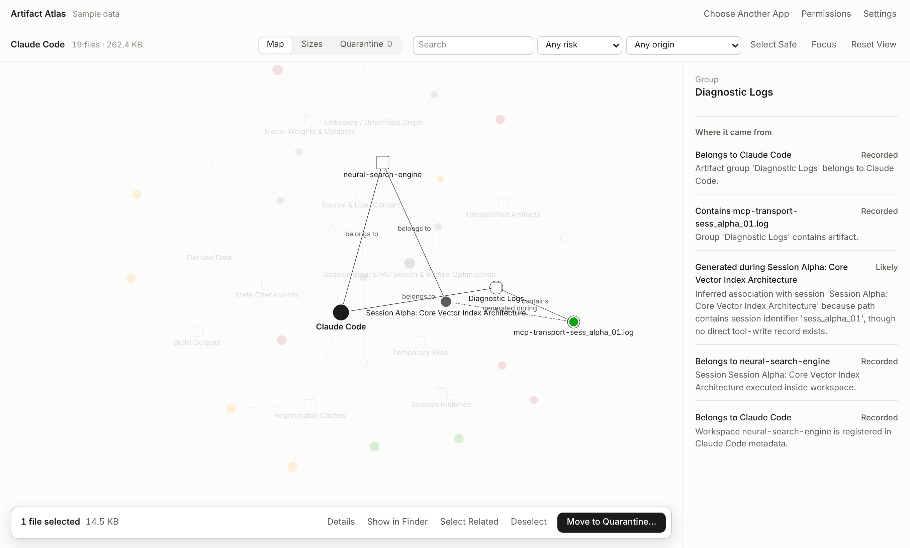

macOS 14+ · Apple silicon · runs offline
Know which AI session made a file before you delete it.
Artifact Atlas maps the files that Claude Code, Cursor, Codex CLI and other apps leave on your Mac to the sessions and tool calls that produced them. Cleanup moves files into a quarantine you can restore from. Nothing is deleted permanently.

How a link is known Line style on the map
Every line between a file and a session says how strong the evidence is. The app never upgrades a guess.
- Recorded
- The session's own tool ledger names the file, for example a write or edit call that targets its exact path.
- Likely
- Indirect evidence, such as a session identifier in the file's path. Shown as likely and never promoted to recorded.
- Unknown
- Nothing ties the file to a session, so it is attached to an explicit unknown-origin node. A matching timestamp alone never creates a link.
Cleanup risk The only color in the app
Risk comes from where a file lives, whether it sits in a Git repository, how its origin is known and how many sessions share it. The file extension alone never decides.
- Safe to remove
- Caches, logs and temporary files inside a tool's own dedicated folders, used by one session only.
- Review first
- Build outputs, files shared by several sessions, and anything that looks disposable but sits outside a dedicated folder.
- High risk
- Session transcripts, model weights, checkpoints and training datasets.
- Protected
- Source code, Git repositories, credentials and configuration files.
What it guarantees
Never deletes permanently
Cleanup moves files into a Quarantine Vault with a SHA-256 digest and a manifest written before the move. Anything can be restored, and restoring never overwrites another file.
Reads, never runs
Apps are identified from their static bundle metadata. Scanned applications are never executed, and symlinks are never followed outside the folders you authorized.
Keeps conversations private
Only structural metadata is indexed: session IDs, timestamps, tool names and file paths. Prompts and replies are never stored.
Stays on your Mac
There is no account and no upload. The app reads nothing from your disk until you allow it, and that consent can be withdrawn.
Works with any app
Drop any .app. Its data is located by bundle identifier and name across Library folders, sandbox containers and hidden home folders. Claude Code, Cursor and Codex also get session-level tracing.
Shows real disk usage
Sizes are physical. Hardlinked files are counted once, so the space you can reclaim is not inflated.
Supported apps And any other .app
Claude Code, Cursor and Codex CLI get session-level tracing: each file is linked to the session and tool call that wrote it. The other apps listed here are found through their known data folders, and anything else you drop is located by its bundle identifier and name.
- Claude Codesessions
- Cursorsessions
- Codex CLIsessions
- ChatGPT
- Windsurf
- Ollama
- LM Studio
- GPT4All
- Zed
- Gemini
- Antigravity
- GitHub Copilot
- Jan
- Perplexity
- Msty
- Continue
- Aider
- Trae
- Kiro
- Any other .app
AI use in numbers Published surveys
Most developers now work with an AI tool, and every session writes transcripts, caches, logs and checkpoints to disk.
- 84%
- of developers use or plan to use AI tools in their work, up from 76% a year earlier. Stack Overflow Developer Survey 2025
- 51%
- of professional developers use AI tools every day. Stack Overflow Developer Survey 2025
- 85%
- of developers regularly use AI tools for coding, in a survey of 24,534 developers. JetBrains State of Developer Ecosystem 2025
- 90%
- of technology professionals use AI at work, among nearly 5,000 surveyed. DORA State of AI-assisted Software Development 2025
- 1.1M
- public GitHub repositories import an LLM SDK, up 178% in one year. GitHub Octoverse 2025
- 66%
- of developers use an AI coding assistant or agent, and 73% of those use it daily. Stack Overflow Developer Survey 2026
Each figure is quoted as its source published it. The surveys ask different questions of different people, so the figures are not comparable with each other. Retrieved November 2026.
What it leaves on disk Documented by the tools
No public study measures how much disk space AI tools leave behind. These are the facts the tools document themselves. For your own Mac, the scan gives the exact totals.
- 30 days
- is how long Claude Code keeps session transcripts on disk by default before its cleanup sweep deletes them. Claude Code settings reference
- 4.9 to 243 GB
- is the download size of a single local model, Llama 3.1, from its 8B build to its 405B build. The 70B build is 43 GB. Ollama library
Install
- Download
ArtifactAtlas-macOS.dmgand open it. - Drag ArtifactAtlas.app into Applications.
- The first time, Control-click the app and choose Open.
- The app opens on built-in sample data and lists the permissions it needs to scan your real files.
- Drop any application onto the window to see its leftovers. The folder being scanned is shown live.
Current builds are not notarized by Apple, so macOS asks for confirmation on first launch. If it reports the app as damaged, clear the download flag:
xattr -dr com.apple.quarantine /Applications/ArtifactAtlas.app
To check the download, compare its hash with SHA256SUMS.txt on the release page:
shasum -a 256 ~/Downloads/ArtifactAtlas-macOS.dmg
Run from source
git clone https://github.com/yazicmert/basket.git
cd basket
npm start # opens the local UI on http://127.0.0.1:4310
npm test
Requires Node.js 22.13 or newer. No npm dependencies.